A place to talk a book over
When I finish a chapter, I want to talk about it. Book podcasts are one-way and rarely about my book. Chatbots can answer, but a wall of text is a cold companion for something you just spent an evening inside.
So the brief was: build a cozy, interactive place where you hand a book to a character, ask out loud, and hear an answer that comes from the book. Something you'd want to sit in for a while.
It started from a sheep. I had a Rive animation of a sheep chewing grass and wondered if that chewing could become talking. A sheep that "chews a chapter over" became the first host, and the place became Baa-ook Club.
What cozy means for voice
- Warm, not clinicalSoft colours, paper, rounded shapes and characters with personality. Nothing that looks like a dashboard.
- Alive while you waitVoice has dead air. Each host looks alive in four states (idle, listening, thinking and speaking), so a pause reads as "they're thinking", not "it's broken".
- Grounded, and honest about gapsEvery answer comes from the uploaded book. If the book doesn't cover something, the host says so, in character.
- Written for the ear, free to visitShort spoken answers with no lists or headings. And nothing paid per minute, so anyone can wander in and stay.
The first pass looked generic
My first version worked, but it looked like a thousand other AI demos: a dark brown background, an elegant serif, an amber accent and soft rounded pills. Nothing about it came from the characters, and nothing about it felt like a room you'd want to sit in.
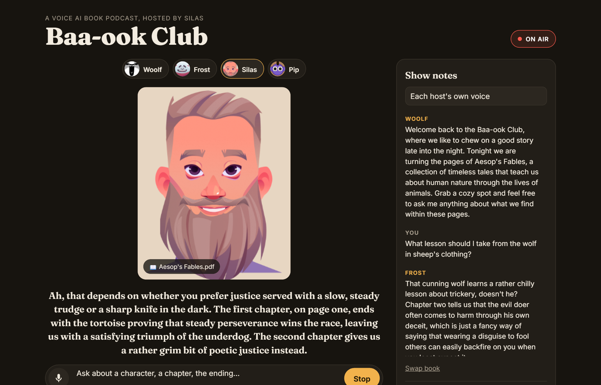
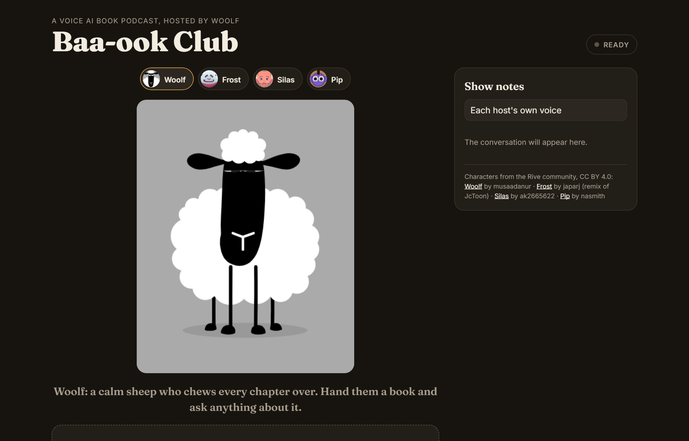
Let the characters set the style
- Each host has their own room. The whole page takes on the host's colour and fades when you switch, so changing host feels like walking into a different room.
- The type comes from the art. The headline face, Bowlby One, is the font inside the original sheep file.
- Paper and ink. Panels are cream paper with warm ink outlines and soft offset shadows in a deeper shade of the room colour, like a picture book.
- Gentle motion. Host tags tilt when you hover them, the mic breathes while listening, the on-air dot blinks. All of it turns off for people who prefer reduced motion.
Listen, think, speak
Baa-ook Club chains three steps: speech to text, a language model, then text to speech. A single speech-to-speech model would be faster, but this chain gave me what the experience needed: the whole book as context, a different voice and speaking style per host, and everything on a free tier.
Every Gemini call happens on the server, so the API key never reaches the browser.
Slow answers break the spell
Nothing kills coziness like waiting. My first build used gemini-3.8-flash, the obvious default. It took 46 seconds to answer a three-word prompt, and over three minutes for the first real question about the book. On the free tier it was unusable, however good its answers might have been.
So I measured the alternatives on the same prompt and the same book.
Measured from my machine on Gemini's free tier, November 2026. Bars are relative to the 46.5 s case.
Flash-Lite answered in 3 to 4 seconds, stayed in character and quoted the right chapter, so it became the default. The lighter voice model saved another 2.5 seconds per answer.
Start talking before the whole answer is voiced
The app splits each answer into its first sentence and the rest, and sends both to the voice model at the same time. The short first sentence comes back first, so the host starts talking while the rest is still being generated.
Free has a ceiling
After a long day of testing, the voice model started refusing requests: the free tier's rate limit. The site handles it gracefully: the answer still appears in the show notes, with a plain "wait a minute" message instead of a broken host. A busier site would need a paid tier, or a fallback to the browser's own built-in voice.
Where it stands: about 3.5 s to the written answer, then roughly 5 s to the first spoken word. While that happens, the host visibly thinks: Woolf chews faster, Pip looks around. That suits a thoughtful book chat, but it isn't real-time conversation yet.
Honest hosts
Each host gets one system prompt with two halves: shared rules (stay in the book, write for the ear, keep it short, be honest about gaps) and a persona paragraph that changes per host.
The book goes to Gemini once through the Files API. Follow-up questions chain on previous_interaction_id, so Gemini keeps both the conversation and the document.
Switching hosts mid-chat keeps the conversation going. The new host gets one extra rule: you've taken over the show, so answer as yourself and don't mention the switch.
YouWho ended up getting caught in the second story, and why?
WoolfIn the second chapter, The Wolf in Sheep's Clothing, it's the wolf who ends up meeting a sticky end. He disguised himself in a forgotten sheep skin to sneak into the pasture… but the shepherd happened to want mutton broth that evening.
YouWhat does the book say about the three little pigs?
WoolfAh, settle down now, the book doesn't mention any pigs at all in these pages. We only have two chapters here… If you have any questions about those characters, I am all ears.
Real answers from testing, lightly trimmed. The test book was two public-domain Aesop fables.
Four hosts, four different rigs
Visitors pick who they talk to. Each host has a personality, a voice and a speaking style, so the same question about the same book gets a different kind of answer: calm, warm, theatrical or punchy.
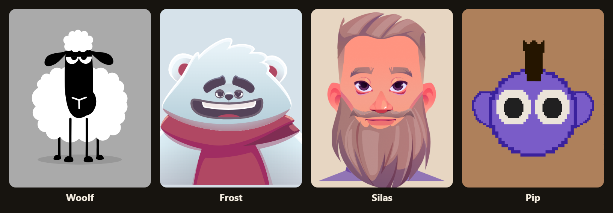
One contract, four adapters
None of these files were made for this site, and each exposes different controls. The sheep has no inputs at all. The yeti has on/off switches. The storyteller has a single trigger. The blob has a data-bound view model.
So the site only ever says what the host is doing (idle, listening, thinking or speaking) and how loud the voice is right now. A small driver per character translates that into whatever its file understands.
| Host | Voice | What the file offered | How it talks, listens and thinks |
|---|---|---|---|
| Woolf | Charon · deep, informative | Timeline animations only: chewing, breathing, blinking, ear flicks | The grass-chewing loop is scrubbed forward by voice loudness and settles closed between words. Stops chewing to listen; chews faster while thinking. |
| Frost | Algenib · gravelly | State machine: Talk, Hear, success, fail | Talk stays on while the voice is audible, with a short hold so it doesn't flicker. Hear raises a paw to his ear while the mic is on. Cheers when a book loads, winces at errors. |
| Silas | Gacrux · mature | A one-shot speak trigger, plus a 10-frame Talking loop | Skips the trigger and scrubs the Talking loop directly, so the mouth follows the speech. Eyebrows move while talking or thinking. |
| Pip | Orus · firm | View model: isTalking, mouthWidth, mouthHeight, plus cursor tracking | Mouth height follows loudness directly, the closest to real lip sync. Looks around while thinking, looks up to listen, and follows your cursor the rest of the time. |
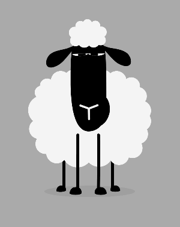
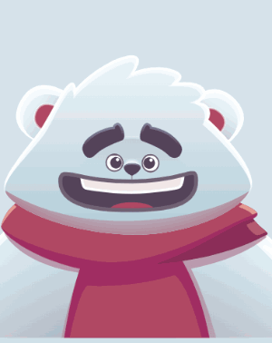
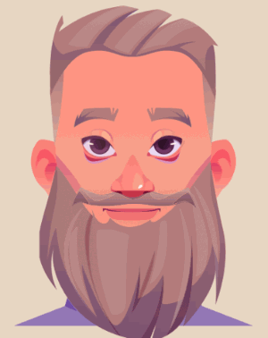
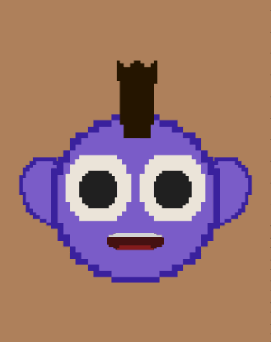
Most of the coziness is in the quiet moments
Talking is a small part of a visit. Most of the time the host is waiting, listening or thinking, and those states are what make the room feel lived in.
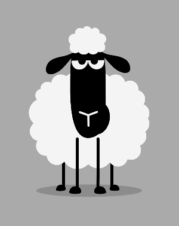
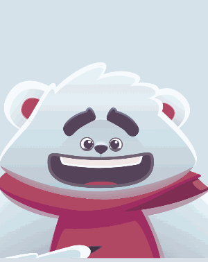
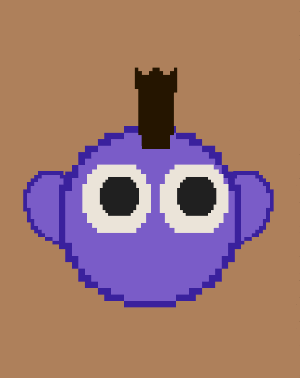
Turning a chewing sheep into a talking one
The sheep came as a poster: a tall artboard with a "MY SHEEP" title, fifteen timeline animations with Turkish names (gevis, chewing; nefes, breath; kirp, blink; kulak, ear) and no state machine inputs. I inspected it in the browser, listed every animation and its length, and worked out which ones could carry the character.
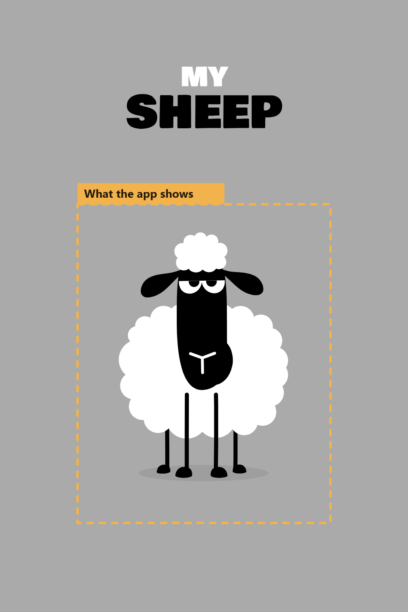
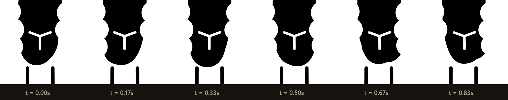
gevis, the chewing loop. Instead of playing it, the site scrubs it: the louder the voice, the faster the jaw moves, and it eases back to closed between words.// Woolf's driver, simplified. Called every frame. if (mode === "speaking") { if (level > 0.04) phase += dt * (1.1 + level * 3.5); else phase += (Math.round(phase) - phase) * dt * 12; // close between words } else { phase += dt * (mode === "thinking" ? 1.15 : 0.6); // chewing grass } rive.scrub("gevis", phase % 1);
Finding hosts that could talk
For more hosts, I searched the Rive community for CC BY characters with mouth or talking controls, previewed six, and checked each file's license and controls before building anything. A red-haired avatar with twelve proper mouth shapes would have given the best lip sync, but it could only be downloaded with a Rive login, so it's parked for later.
Checking the work, not just eyeballing it
Every GIF here was recorded straight from the site's canvas. Before using each one, I decoded it and counted how many pixels changed between frames. That caught two silent failures a still screenshot would have hidden: a sheep that wasn't animating at all, and a Pip whose head ignored the values I set. Pip's head turned out to follow the pointer, so its driver now steers its gaze with gentle synthetic pointer moves.
How a visit goes
- Pick a host. The room changes colour to match them.
- Hand them a book. Drop in a PDF. The host reads it and opens by naming the book and inviting questions.
- Ask. Tap the mic (Chrome and Edge's built-in speech recognition, free) or type.
- Listen. The stage gets a red ring and the tag reads On air. Stop cuts in; a new question also interrupts.
- Show notes. A paper card keeps the conversation, tinted by which host said what, with replay on every answer.
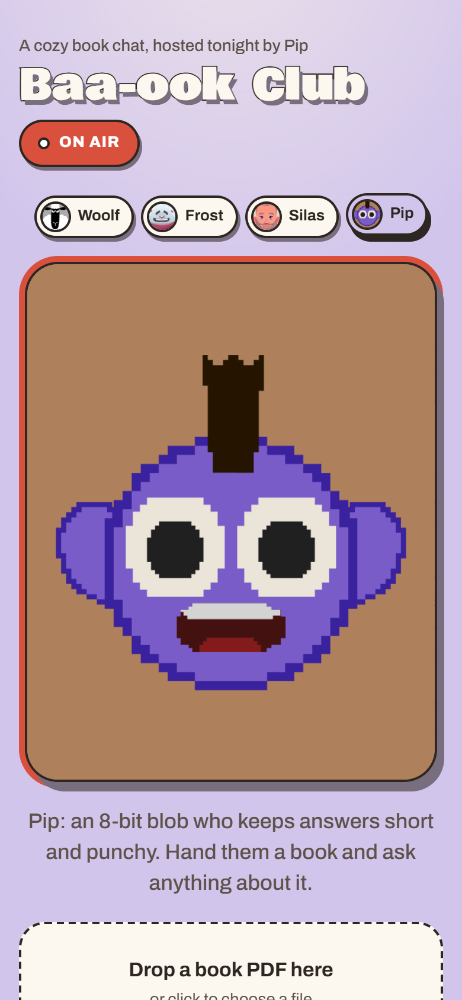
What I chose not to do
What's next
- Streaming speech, to get the first spoken word in under 2 seconds.
- A fallback voice (the browser's built-in one) for when the free voice model is rate-limited.
- Real mouth shapes, using a host with a proper viseme set, like the twelve-shape avatar I had to park.
- Interrupting by voice, not just by tapping Stop.
- A small honesty test set (including questions about things not in the book) to re-check whenever the model changes.
How I worked with AI
I built this pairing with Claude Code. It wrote the code: the API routes, the character drivers and the capture tooling. I did the parts that decide whether it's any good:
- the brief, the idea of a cozy room with hosts, and the four personalities
- choosing the stack under a hard constraint (free to run)
- picking characters, and judging each one in every state
- noticing the first design looked generic, and steering the redesign
The loop was: decide, build, measure or record, critique, fix. Measuring things like answer time and GIF frame changes, rather than eyeballing them, caught the slow model and the silently frozen characters.
Build your own
The code is public at github.com/shriy-singh/baa-ook-club, without any API keys.
- Get a free Gemini API key at aistudio.google.com/apikey.
- Clone the repo, put the key in
.env.localasGEMINI_API_KEY=…, then runnpm installandnpm run dev. - Open it in Chrome or Edge, pick a host and drop in a PDF.
- To add a host: put a
.rivfile inpublic/characters, add an entry tolib/characters.ts(persona, voice, room colour, crop), and write a small driver incomponents/Avatar.tsxthat maps the four states onto that file's controls.